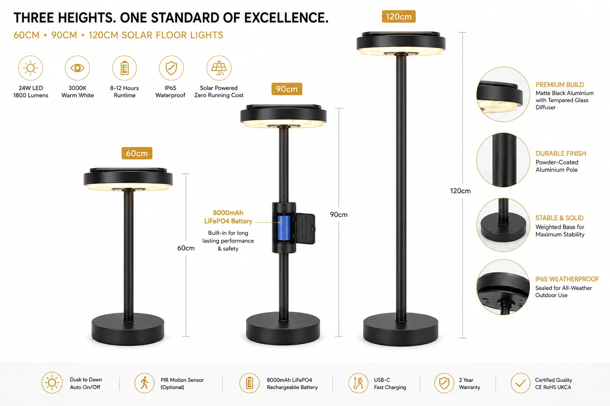

太阳能户外落地灯
用于露台和阳台的独立式太阳能落地灯——60/90/120cm,铝与钢化玻璃,24W、1800 流明 3000K 暖光,IP65,黄昏到黎明并可选 PIR。

这是一件设计师个性之作——为户外起居室、阳台和酒店休息区打造的独立式落地灯。铝与钢化玻璃赋予它家具级质感,三种高度(60/90/120cm)契合不同场景,24W / 1800 流明能真正照亮一处座位区,而非仅作装饰。大容量 8000mAh 磷酸铁锂电池与 IP65 密封让它整季可靠;可选 PIR 增添人体感应。
规格参数
| 高度 | 60 / 90 / 120 cm |
|---|---|
| 功率 | 24W |
| 光通量 | 1800 lm |
| 色温 | 3000K 暖白 |
| 电池 | 8000mAh 磷酸铁锂 |
| 材质 | 铝 + 钢化玻璃 |
| IP 防护等级 | IP65 |
| 控制 | 黄昏到黎明 + 可选 PIR |
| 饰面 | 黑 / 白 / 铜 |
| 认证 | CE + RoHS |
为什么选它
家具级设计。铝与钢化玻璃将它定位为高端生活方式产品,而非实用灯具。
真实输出。24W / 1800 流明能照亮一处座位区——实用,而非仅装饰。
三种高度、可选 PIR。灵活契合场景与买家规格。
已认证、支持 OEM。每份报价附 CE + RoHS;可定制饰面与品牌。为什么磷酸铁锂更好 →
为这些市场而建西班牙、澳大利亚、中东和拉美的高端户外生活、别墅与酒店渠道——高价值的个性 SKU。